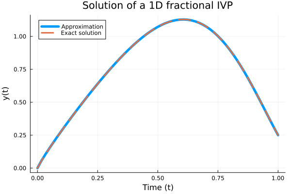
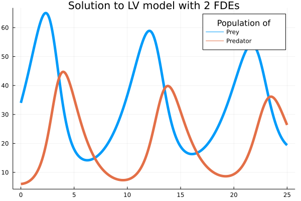
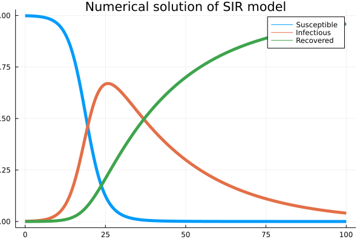
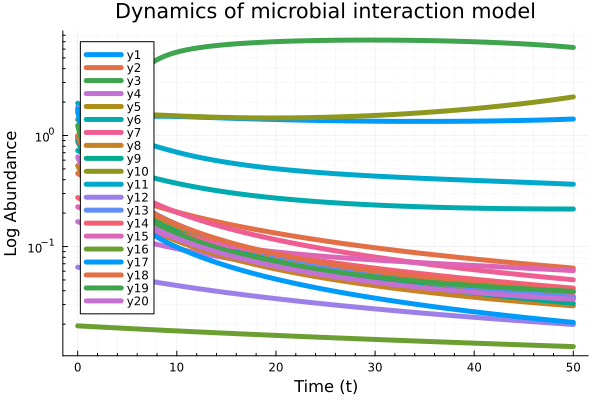

Usage and Applications
Example 1: Fractional nonlinear equation
For $0<\beta\leq1$ being subject to the initial condition $y(0)=0$, the exact solution is:
\[y(t)=t^8-3t^{4+\beta/2}+9/4t^\beta\]
# Inputs
tSpan = [0, 1]; # [intial time, final time]
y0 = 0; # initial value
β = 0.9; # order of the derivative
# ODE Model
par = β;
F(t, y, par) = (40320 ./ gamma(9 - par) .* t .^ (8 - par) .- 3 .* gamma(5 + par / 2)
./ gamma(5 - par / 2) .* t .^ (4 - par / 2) .+ 9/4 * gamma(par + 1) .+
(3 / 2 .* t .^ (par / 2) .- t .^ 4) .^ 3 .- y .^ (3 / 2));
## Numerical solution
t, Yapp = FDEsolver(F, tSpan, y0, β, par);
# Plot
plot(t, Yapp, linewidth = 5, title = "Solution of a 1D fractional IVP",
xaxis = "Time (t)", yaxis = "y(t)", label = "Approximation");
plot!(t, t -> (t.^8 - 3 * t .^ (4 + β / 2) + 9/4 * t.^β),
lw = 3, ls = :dash, label = "Exact solution");
Example 2: Lotka-volterra-predator-prey
# Inputs
tSpan = [0, 25]; # [initial time, final time]
y0 = [34, 6]; # initial values
beta = [0.98, 0.99]; # order of derivatives
par = [0.55, 0.028, 0.84, 0.026]; # model parameters
# ODE Model
function F(t, y, par)
α = par[1] # growth rate of the prey population
β = par[2] # rate of shrinkage relative to the product of the population sizes
γ = par[3] # shrinkage rate of the predator population
δ = par[4] # growth rate of the predator population as a factor of the product
# of the population sizes
u = y[1] # population size of the prey species at time t[n]
v = y[2] # population size of the predator species at time t[n]
F1 = α .* u .- β .* u .* v
F2 = - γ .* v .+ δ .* u .* v
[F1, F2]
end
## Solution
t, Yapp = FDEsolver(F, tSpan, y0, beta, par);
# Plot
plot(t, Yapp, linewidth = 5, title = "Solution to LV model with 2 FDEs",
xaxis = "Time (t)", yaxis = "y(t)", label = ["Prey" "Predator"]);
plot!(legendtitle = "Population of");
Example 3: SIR model
One application of using fractional calculus is taking into account effects of memory in modeling including epidemic evolution.
By defining the Jacobian matrix, the user can achieve a faster convergence based on the modified Newton–Raphson method.
# Inputs
I0 = 0.001; # intial value of infected
tSpan = [0, 100]; # [intial time, final time]
y0 = [1 - I0, I0, 0]; # initial values [S0,I0,R0]
α = [1, 1, 1]; # order of derivatives
h = 0.1; # step size of computation (default = 0.01)
par = [0.4, 0.04]; # parameters [β, recovery rate]
## ODE model
function F(t, y, par)
# parameters
β = par[1] # infection rate
γ = par[2] # recovery rate
S = y[1] # Susceptible
I = y[2] # Infectious
R = y[3] # Recovered
# System equation
dSdt = - β .* S .* I
dIdt = β .* S .* I .- γ .* I
dRdt = γ .* I
return [dSdt, dIdt, dRdt]
end
## Jacobian of ODE system
function JacobF(t, y, par)
# parameters
β = par[1] # infection rate
γ = par[2] # recovery rate
S = y[1] # Susceptible
I = y[2] # Infectious
R = y[3] # Recovered
# System equation
J11 = - β * I
J12 = - β * S
J13 = 0
J21 = β * I
J22 = β * S - γ
J23 = 0
J31 = 0
J32 = γ
J33 = 0
J = [J11 J12 J13
J21 J22 J23
J31 J32 J33]
return J
end
## Solution
t, Yapp = FDEsolver(F, tSpan, y0, α, par, JF = JacobF, h = h);
# Plot
plot(t, Yapp, linewidth = 5, title = "Numerical solution of SIR model",
xaxis = "Time (t)", yaxis = "SIR populations", label = ["Susceptible" "Infectious" "Recovered"]);
Example 4: Dynamics of interaction of N species microbial communities
The impact of ecological memory on the dynamics of interacting communities can be quantified by solving fractional form ODE systems.
tSpan = [0, 50]; # time span
h = 0.1; # time step
N = 20; # number of species
β = ones(N); # order of derivatives
X0 = 2 * rand(N); # initial abundances
# parametrisation
par = [2,
2 * rand(N),
rand(N),
4 * rand(N, N),
N];
# ODE model
function F(t, x, par)
l = par[1] # Hill coefficient
b = par[2] # growth rates
k = par[3] # death rates
K = par[4] # inhibition matrix
N = par[5] # number of species
Fun = zeros(N)
for i in 1:N
# inhibition functions
f = prod(K[i, 1:end .!= i] .^ l ./
(K[i, 1:end .!= i] .^ l .+ x[ 1:end .!= i] .^l))
# System of equations
Fun[i] = x[ i] .* (b[i] .* f .- k[i] .* x[ i])
end
return Fun
end
# Solution
t, Xapp = FDEsolver(F, tSpan, X0, β, par, h = h, nc = 3, tol = 10e-9);
# Plot
plot(t, Xapp, linewidth = 5,
title = "Dynamics of microbial interaction model",
xaxis = "Time (t)");
yaxis!("Log Abundance", :log10, minorgrid = true);